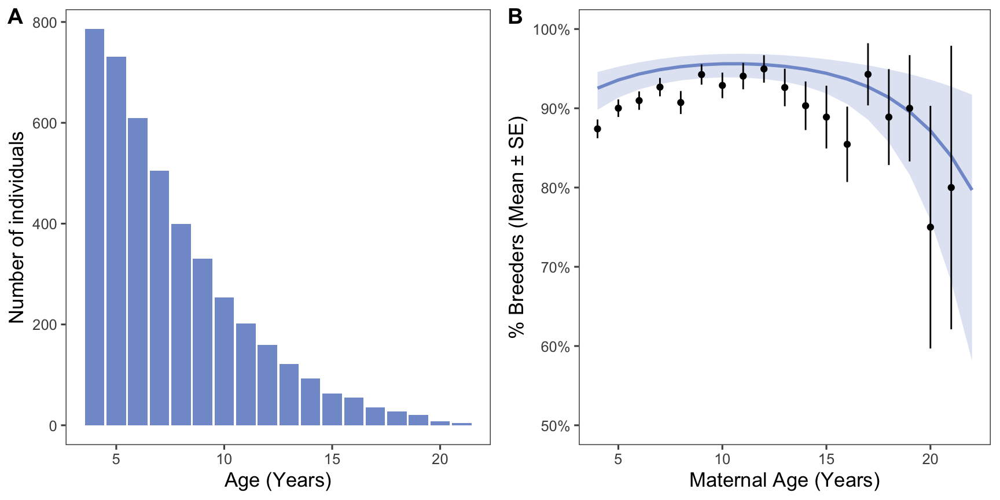
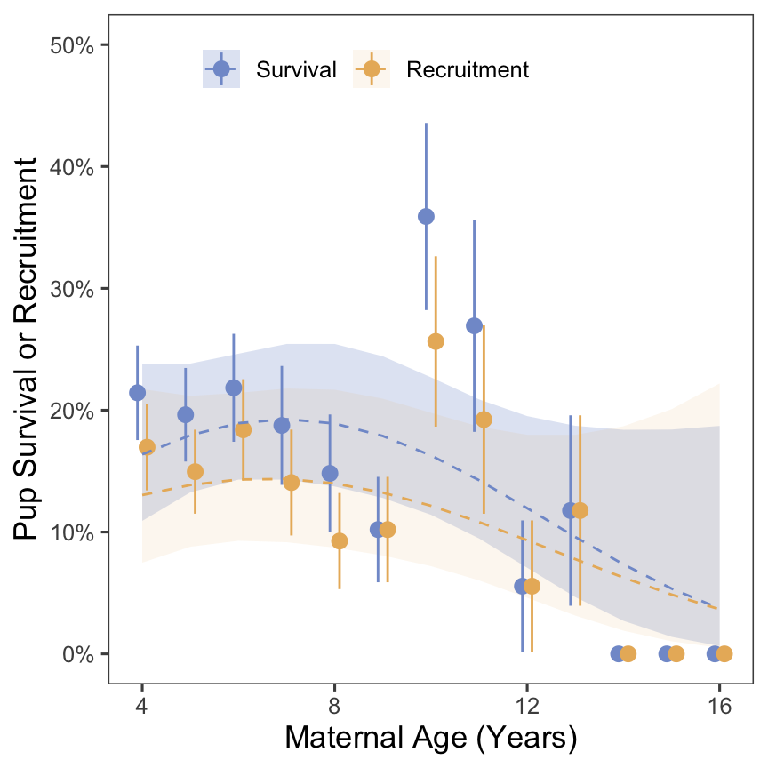
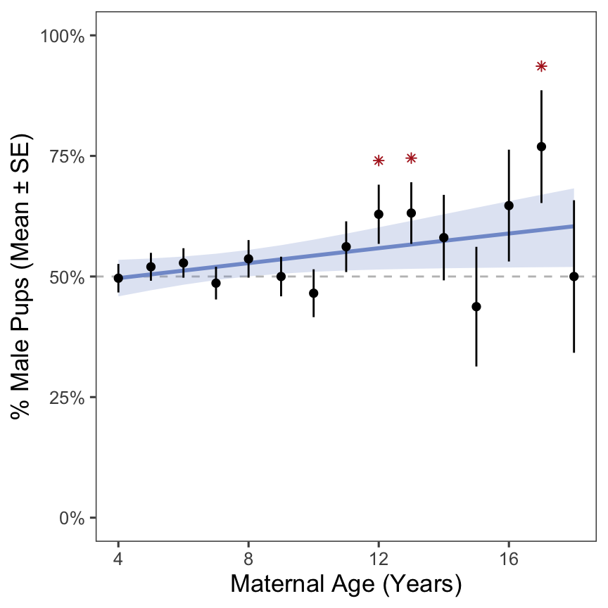
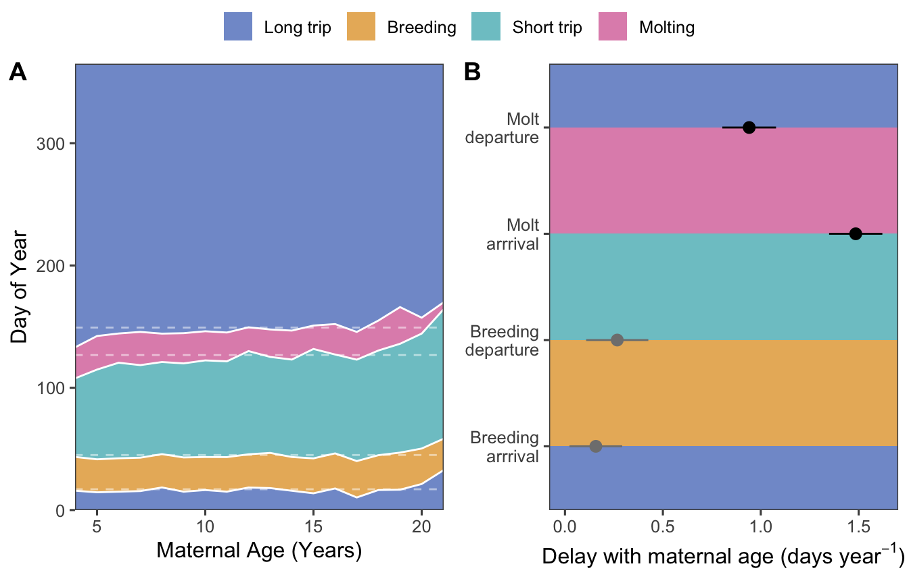

Elephant seal reproductive success declines with age.
Reproductive declines persist to the next generation (maternal effect senescence).
Seal phenology is shifted later for older animals and breeders.
Note: This paper is similar to another paper about polar bears (Ursus maritimus)(Naciri et al. 2022).
Results
H1: Age distribution and breeding status
We predicted that breeding success would decline with age. We found that breeding success increases to prime age, then decreases at older ages (Figure 1).

Figure 1: A: Age structure of northern elephant seals at Año Nuevo. B: Percentage of each age class that were observed breeding.
Population level prediction - the fact that the raw data falls above it comes from the fact that those age classes are correlated with years and individuals that were very successful.
H2: Maternal effect senescence
We predicted that reproductive declines would carry over to the next generation - that is, pups born to older mothers would have decreased survival and recruitment success.
We found that neither pup survival nor recruitment is significantly affected by maternal age (Figure 2).
We reject our hypothesis: reproductive declines do not persist to the next generation, and there is no evidence of maternal effect senescence.

Figure 2: Pup survival and recruitment are not significantly affected by maternal age. Points are mean values for maternal age. Error bars show SE.
The model of Survival ~ Maternal age was significant before we treated Year as a random effect. Was that because pups born earlier in the study had more time to be seen again (i.e., a sampling artifact?) If so, the plot of the random effect of year should have a negative slope.
We also plotted survival bias to show that 95% of pups were resighted within 7 years. Both plots are supplemental.
[1] 86
Figure 3: A: Plotting the intercept of the random effect of year shows that variation in ocean conditions is likely driving patterns in survival, rather than age of mother. B: 95% of seals that survived were resighted within ~seven years of their birth.
There is a drop off in recent years that seems to support the idea that recent years have a sampling bias, but the earlier portion suggests that overall the variation is caused by ocean conditions and not sampling. See the Cohort paper!
H3a: Changes in pup sex ratio with increased maternal age
We found that as maternal age increases, pup sex skews slightly towards males - but it’s not significant.
Generalized linear mixed model fit by maximum likelihood (Laplace
Approximation) [glmerMod]
Family: binomial ( logit )
Formula: is_male ~ age + (1 | animalID) + (1 | year)
Data: pup_sex_data
AIC BIC logLik deviance df.resid
2461.9 2483.9 -1227.0 2453.9 1773
Scaled residuals:
Min 1Q Median 3Q Max
-1.2774 -1.0261 0.8293 0.9511 1.0844
Random effects:
Groups Name Variance Std.Dev.
animalID (Intercept) 0.02253 0.1501
year (Intercept) 0.02350 0.1533
Number of obs: 1777, groups: animalID, 796; year, 36
Fixed effects:
Estimate Std. Error z value Pr(>|z|)
(Intercept) -0.13793 0.13100 -1.053 0.2924
age 0.03115 0.01601 1.946 0.0517 .
---
Signif. codes: 0 '***' 0.001 '**' 0.01 '*' 0.05 '.' 0.1 ' ' 1
Correlation of Fixed Effects:
(Intr)
age -0.905

Figure 4: Pup sex skews slightly towards males with increasing maternal age, but it’s not significant.
H3b: Changes to annual cycle timing with increased maternal age
We predicted that seals would shift the timing of their annual cycle.
We found that as maternal age increases, there are slight adjustments to the timing of life history events. These events (breeding/molting arrival/departure) are typically shifted later for older animals (Figure 5).

Figure 5: Successful breeding and increased maternal age both impact elephant seal annual cycles. A: Visualization of life history timing across ages, faceted by breeding status. White dashed lines on each panel represent the raw data from the other panel to facilitate comparisons between breeders and non-breeders. B: LMM coefficients for phenological parameters. The units for maternal age coefficients are in days per year. The coefficients for breeding status are in days. Black points are significant, gray points are not significant.
Supplemental Material
Supplemental Table 1: Statistics for breeding success model.
Table 1: The results from breeding probability analyis. The random effect variance of animal id is 0.450 and of year was 0.607.
Parameter
Estimate
Std. Error
z value
p value
Intercept
2.82
0.160
17.6
<0.01
Age (linear)
5.90
3.63
1.63
0.10
Age (quadratic)
-12.9
3.31
-3.90
<0.01
References
Naciri, Marwan, Jon Aars, Marie-Anne Blanchet, Olivier Gimenez, and Sarah Cubaynes. 2022. “Reproductive Senescence in Polar Bears in a Variable Environment.”Frontiers in Ecology and Evolution 10 (October). https://doi.org/10.3389/fevo.2022.920481.
Source Code
---title: "Elephant Seal Age JAE Intraspecific Variation"format: html: echo: false fig-width: 4.5 fig-height: 4.5 code-fold: true code-tools: true warning: falseeditor: visualbibliography: references.bib---```{r}#| label: setup#| include: false library(ggthemes)library(cowplot)library(lme4)library(lmerTest) # Loading this library will automatically append p-values to lmer models estimated using something called Satterthwaite's methodlibrary(merTools)library(tidyverse)library(ggeffects)library(patchwork)sealdat <-read_csv(here::here("data/raw/128L pull 2023_12_05.csv"), show_col_types =FALSE) %>%mutate(observed =if_else(observed =="B", "Breeder", "Non-breeder"), observed_int =if_else(observed =="Breeder", 1, 0), pup_survived = pupseeneveragain >0) %>%filter(age >3, year >1987)```# IntroductionOur hypotheses:1. Elephant seal reproductive success declines with age.2. Reproductive declines persist to the next generation (maternal effect senescence). 3. Seal phenology is shifted later for older animals and breeders.**Note**: *This paper is similar to another paper about polar bears (*Ursus maritimus*)* [@naciri2022].# Results### H1: Age distribution and breeding statusWe predicted that breeding success would decline with age. We found that breeding success increases to prime age, then decreases at older ages (@fig-age_dist).```{r}#| label: age_breeding_modbreeding_mod <-glmer(observed_int ~poly(age, 2) + (1| animalID) + (1| year),data =filter(sealdat), family ="binomial", control =glmerControl(optimizer ="bobyqa"))breed_pred <-ggpredict(breeding_mod, terms =c("age [all]"))breed_mod_summary <-summary(breeding_mod)format_signif <-function(x, digits) {formatC(signif(x, digits = digits), digits = digits, format ="fg", flag ="#")}format_pval <-function(p, digits) {ifelse(p <10^-digits,sprintf("<%s", format(10^-digits, digits =1, scientific =FALSE)),sprintf(paste0("%0.", digits, "f"), p))}#change rightmost value to say p value #add an extra sig fig to all columns#p values are also rounded....#table s1, look at roxannes ecology letters paper supplemental #Pull out the fixed effects table with 2 sfs, can paste in excel to adjust digits #intercept, age (linear), age (quadratic) as row names #in figure caption say "results from x analyis. The random effect variance of animal id is X (from results) and year was X. Apply to all the other stats. #analyses fit to the age in which we have larger sample sizes fit also have a quadratic fit and don't change the story``````{r}#| label: fig-age_dist#| fig-cap: "A: Age structure of northern elephant seals at Año Nuevo. B: Percentage of each age class that were observed breeding."#| fig-width: 9#Age distribution panel A age_dist <- sealdat %>%filter(age <22) %>%group_by(age) %>%count(age) %>%ggplot(aes(x = age, y = n)) +geom_col(fill ="#829BD1") +labs(x ="Age (Years)", y ="Number of individuals") +theme_few() +theme(axis.title =element_text(size =13))#Panel B: percentage of each age class that were breeders or nonbreedersbreed_nonbreed <- sealdat %>%group_by(age) %>%summarize(n_observed =sum(!is.na(observed)), perc_breed =sum(observed =="Breeder") / n_observed, se = (perc_breed * (1- perc_breed) / n_observed)^0.5) %>%filter(age <22) %>%ggplot(aes(x = age, y = perc_breed)) +geom_ribbon(aes(x, ymin = conf.low, ymax = conf.high), breed_pred,inherit.aes =FALSE,fill ="#829BD1",alpha =0.25) +geom_line(aes(x, predicted), breed_pred,inherit.aes =FALSE,color ="#829BD1",linewidth =1) +geom_point() +geom_errorbar(aes(ymin = perc_breed - se, ymax = perc_breed + se), width =0) +scale_y_continuous(labels = scales::percent, limits =c(0, 1)) +labs(x ="Maternal Age (Years)", y ="% Breeders (Mean ± SE)") +theme_few() +theme(axis.title =element_text(size =13))plot_grid(age_dist, breed_nonbreed, nrow =1, labels ="AUTO")ggsave("outputs/agefig1.png", plot = , height =4, width =9)```Population level prediction - the fact that the raw data falls above it comes from the fact that those age classes are correlated with years and individuals that were very successful.### H2: Maternal effect senescenceWe predicted that reproductive declines would carry over to the next generation - that is, pups born to older mothers would have decreased survival and recruitment success.We found that neither pup survival nor recruitment is significantly affected by maternal age (@fig-repro_age).We reject our hypothesis: reproductive declines do not persist to the next generation, and there is no evidence of maternal effect senescence.```{r}#| label: fig-repro_age#| fig-cap: "Pup survival and recruitment are not significantly affected by maternal age. Points are mean values for maternal age. Error bars show SE."#| fig-width: 4.5#B Pup survival and recruitment doesn't change with increased maternal age.surv_recruit_data <- sealdat %>%drop_na(pupID) %>%filter(pupsex =="F", pupyearborn <2016) %>%mutate(pup_survived_dbl =ifelse(pup_survived, 1, 0)) %>%group_by(age) %>%mutate(n_pups =n()) %>%ungroup() %>%filter(n_pups >=5)pup_surv_model <-glmer(pup_survived_dbl ~poly(age, 2) + (1| animalID) + (1| year),data = surv_recruit_data, family ="binomial")pup_surv_pred <-ggpredict(pup_surv_model, terms =c("age [all]")) %>%as_tibble() %>%transmute(age = x, metric ="surv", mean = predicted, mean_lwr = conf.low, mean_upr = conf.high)pup_recruit_model <-glmer(puprecruited ~poly(age, 2) + (1| animalID) + (1| year),data = surv_recruit_data, family ="binomial")pup_recruit_pred <-ggpredict(pup_recruit_model, terms =c("age [all]")) %>%as_tibble() %>%transmute(age = x, metric ="recruit", mean = predicted, mean_lwr = conf.low, mean_upr = conf.high)surv_recruit_pred <-rbind(pup_surv_pred, pup_recruit_pred) %>%mutate(metric =factor(metric, levels =c("surv", "recruit"), labels =c("Survival", "Recruitment")))surv_recruit_summary <- surv_recruit_data %>%group_by(age) %>%summarize(n_pups =n(),n_surv =sum(pup_survived),mean_surv = n_surv / n_pups, se_surv = (mean_surv * (1- mean_surv) / n_pups)^0.5,n_recruit =sum(puprecruited), mean_recruit = n_recruit / n_pups, se_recruit = (mean_recruit * (1- mean_recruit) / n_pups)^0.5) %>%pivot_longer(cols =c(mean_surv, se_surv, mean_recruit, se_recruit), names_to =c("stat", "metric"), names_pattern ="(.*)_(.*)") %>%pivot_wider(names_from ="stat", values_from ="value") %>%mutate(low = mean - se, high = mean + se, age = age +ifelse(metric =="surv", -0.1, 0.1), metric =factor(metric, levels =c("surv", "recruit"), labels =c("Survival", "Recruitment")))surv_recruit_summary %>%ggplot(aes(x = age, y = mean, color = metric, fill = metric)) +geom_ribbon(aes(ymin = mean_lwr, ymax = mean_upr, alpha = metric), surv_recruit_pred,color =NA) +geom_pointrange(aes(ymin = low, ymax = high)) +geom_line(aes(linetype = metric), surv_recruit_pred) +scale_y_continuous(labels = scales::percent) +scale_color_manual(values =c("#829BD1", "#E9B668")) +scale_fill_manual(values =c("#829BD1", "#E9B668")) +scale_linetype_manual(values =c("dashed", "dashed")) +scale_alpha_manual(values =c(0.25, 0.1)) +expand_limits(y =c(0, 0.5)) +labs(x ="Maternal Age (Years)", y ="Pup Survival or Recruitment") +theme_few() +theme(legend.position =c(0.1,0.97), legend.justification =c(0,1), legend.title =element_blank(), legend.direction ="horizontal", axis.title =element_text(size =13))#Why is recruitment higher than survival in some points? Add the quadratic model? Reverse order of legend in the figure#caption - error bars show SE. Points are mean values for maternal age. Make sure that language in the caption matches both the model and the data ```The model of Survival \~ Maternal age was significant before we treated Year as a random effect. Was that because pups born earlier in the study had more time to be seen again (i.e., a sampling artifact?) If so, the plot of the random effect of year should have a negative slope.We also plotted survival bias to show that 95% of pups were resighted within 7 years. Both plots are supplemental.```{r}#| label: fig-surv_bias#| fig-cap: "A: Plotting the intercept of the random effect of year shows that variation in ocean conditions is likely driving patterns in survival, rather than age of mother. B: 95% of seals that survived were resighted within ~seven years of their birth."#| fig-width: 9year_ranef <-ranef(pup_surv_model)$year %>%as_tibble(rownames ="year") %>%mutate(year =as.numeric(year)) %>%rename(intercept =`(Intercept)`)year_ranef_plot <-ggplot(year_ranef, aes(year, intercept)) +geom_point() +geom_smooth(method ="loess", formula = y ~ x,color ="red") +theme_classic()survival_bias <- sealdat %>%group_by(animalID) %>%summarize(first_resight_yrs =min(age))survival95 <-quantile(survival_bias$first_resight_yrs, 0.95)#n for 95% quantilesum(survival_bias$first_resight_yrs >7)survival_bias_plot <-ggplot(survival_bias, aes(x = first_resight_yrs)) +stat_ecdf() +geom_vline(xintercept = survival95, linetype ="dashed", color ="red") +scale_x_continuous(limits =c(0, 10)) +theme_classic()plot_grid(year_ranef_plot, survival_bias_plot, nrow =1, labels ="AUTO")```There is a drop off in recent years that seems to support the idea that recent years have a sampling bias, but the earlier portion suggests that overall the variation is caused by ocean conditions and not sampling. See the Cohort paper!### H3a: Changes in pup sex ratio with increased maternal ageWe found that as maternal age increases, pup sex skews slightly towards males - but it's not significant.```{r}#| label: fig-sex_ratio#| fig-cap: "Pup sex skews slightly towards males with increasing maternal age, but it's not significant."#| fig-width: 4.5#A: Pup sex shifts towards males with increasing maternal age, but it's not significant.pup_sex_data <- sealdat %>%filter(pupsex %in%c("M", "F"), age <19) %>%mutate(is_male =ifelse(pupsex =="M", 1, 0))#linearpup_sex_mod <-glmer(is_male ~ age + (1| animalID) + (1| year),data = pup_sex_data, family ="binomial")summary(pup_sex_mod)# We fit a quadratic equation, but only the linear term was significant, so the linear model is the one that is plotted. pup_sex_pred <-ggpredict(pup_sex_mod, terms =c("age [all]")) %>%as_tibble() %>%transmute(age = x, percm = predicted, percm_lwr = conf.low, percm_upr = conf.high)pup_sex_data %>%group_by(age, pupsex) %>%summarize(n =n(), .groups ="drop") %>%pivot_wider(values_from = n, names_from = pupsex) %>%mutate(num = M + F,percm = M / num,se = (percm * (1- percm) / num)^0.5) %>%ggplot(aes(x = age, y = percm)) +geom_hline(yintercept =0.5, color ="gray75", linetype ="dashed") +geom_ribbon(aes(ymin = percm_lwr, ymax = percm_upr), pup_sex_pred,fill ="#829BD1",alpha =0.25) +geom_line(data = pup_sex_pred, color ="#829BD1", linewidth =1) +geom_pointrange(aes(ymin = percm - se, ymax = percm + se), size =0.25) +scale_y_continuous(labels = scales::percent, limits =c(0, 1)) +labs(x ="Maternal Age (Years)", y ="% Male Pups (Mean ± SE)") +theme_few() +theme(axis.title =element_text(size =13))#take the p = 0.517 and divide by 2 because a priori. report in supplemental table that its reporting on 1 tailed (no absolute value of z, just z)```### H3b: Changes to annual cycle timing with increased maternal ageWe predicted that seals would shift the timing of their annual cycle.We found that as maternal age increases, there are slight adjustments to the timing of life history events. These events (breeding/molting arrival/departure) are typically shifted later for older animals (@fig-phenology).```{r}seal_phenology <- sealdat %>%filter(observed =="Breeder") %>%mutate(BA = firstobsbreeddoy, BD = firstobsbreeddoy + breeddur, MA = lastobsmoltdoy - moltdur, MD = lastobsmoltdoy) %>%drop_na(age, BA, BD, MA, MD)mean_phenology <- seal_phenology %>%group_by(age) %>%summarize(across(BA:MD, mean)) %>%summarize(across(BA:MD, mean)) %>%pivot_longer(everything(),names_to ="event", values_to ="doy") phenology_n <-unique(seal_phenology$animalID)timing_summary <- seal_phenology %>%group_by(age) %>%summarize(across(BA:MD, mean), .groups ="drop") %>%pivot_longer(cols =-age, names_to ="event", values_to ="doy") %>%group_by(age) %>%group_modify(\(data, keys) {tibble(event =c("Long trip", "Breeding", "Short trip", "Molting", "longtrip2"),doy =c(data$doy, 365) -c(0, data$doy)) }) %>%ungroup() %>%mutate(event =factor(event, levels =c("Long trip", "Breeding", "Short trip", "Molting", "longtrip2")))``````{r}#| label: fig-phenology#| fig-height: 4.5#| fig-width: 7#| fig-cap: "Successful breeding and increased maternal age both impact elephant seal annual cycles. A: Visualization of life history timing across ages, faceted by breeding status. White dashed lines on each panel represent the raw data from the other panel to facilitate comparisons between breeders and non-breeders. B: LMM coefficients for phenological parameters. The units for maternal age coefficients are in days per year. The coefficients for breeding status are in days. Black points are significant, gray points are not significant."#Delete the non-breeders and add the dashed line as an average instead. #put panels next to each other #what do you do when breeding dates are in december? ifelse statement (if > 250), 200 - 365 (so use negative numbers if they are in december) **does not happen! no worries!!**#show xy plots of each phenological variable against age in the supplemental and summary stats for the model in the supplement too #draw attention to the widths - 1) 2) 3) #assess linearity from plots, but double check visually and see if quadratic might fit better (we werent sure if age patterns would be linear or not, so we tested quadratic analyses throughout)phen_plot1 <-ggplot(timing_summary, aes(x = age, y = doy, fill = event)) +geom_area(position =position_stack(reverse =TRUE),color =NA) +geom_line(position =position_stack(reverse =TRUE),color ="white") +geom_hline(aes(yintercept = doy), mean_phenology,color ="white",linetype ="dashed",alpha =0.5) +scale_fill_discrete(type =c("#829BD1", "#E9B668", "#7EC6CC", "#E091B9", "#829BD1"),breaks =c("Long trip", "Breeding", "Short trip", "Molting")) +scale_x_continuous("Maternal Age (Years)", expand =expansion(mult =0)) +scale_y_continuous("Day of Year", expand =expansion(mult =0)) +theme_few() +theme(axis.title =element_text(size =12),panel.spacing =unit(1, "lines"))# Utility functions for model fitting and coefficient extractionfit_model <-function(dat) {lmer(doy ~ age + (1| animalID) + (1| year), data = dat)}extract_estimate <-function(models, param) {map_dbl(models, \(mod) summary(mod)$coefficients[param, "Estimate"])}extract_stderr <-function(models, param) {map_dbl(models, \(mod) summary(mod)$coefficients[param, "Std. Error"])}extract_pval <-function(models, param) {map_dbl(models, \(mod) summary(mod)$coefficients[param, "Pr(>|t|)"])}# This data frame contains a model for each phenological variable w.r.t. agephenology_models <- seal_phenology %>%pivot_longer(BA:MD, names_to ="phenology", values_to ="doy") %>%select(phenology, doy, age, animalID, year) %>%nest(model_data =c(doy, age, animalID, year)) %>%mutate(model =map(model_data, fit_model),age_coef =extract_estimate(model, "age"),age_stderr =extract_stderr(model, "age"),age_pval =extract_pval(model, "age"),age_signif = age_pval <0.05)phen_wrapped <-tibble(event_begin =c(-Inf, 1:4),event_end =c(1:4, Inf),event = timing_summary$event[0:5])phen_plot2 <- phenology_models %>%select(-c(model_data, model)) %>%pivot_longer(c(ends_with("coef"), ends_with("stderr"), ends_with("signif")),names_to =c("param", "metric"),names_sep ="_",values_to ="value") %>%pivot_wider(names_from = metric, values_from = value) %>%mutate(signif =as.logical(signif), # param = factor(param, # labels = "'Delay with maternal age (days year'^-1 * ')'"), phenology =factor(phenology, labels =c("Breeding\narrrival", "Breeding\ndeparture", "Molt\narrrival", "Molt\ndeparture"))) %>%ggplot(aes(x = coef, y = phenology)) +# Prevent geom_rect() from establishing a continuous y-axis scalegeom_point(alpha =0) +geom_rect(aes(xmin =-Inf, xmax =Inf,ymin = event_begin, ymax = event_end,fill = event), phen_wrapped,inherit.aes =FALSE) +geom_pointrange(aes(xmin = coef - stderr, xmax = coef + stderr,color = signif)) +scale_color_manual(values =c("FALSE"="grey50", "TRUE"="black"),guide ="none") +scale_fill_discrete(type =c("#829BD1", "#E9B668", "#7EC6CC", "#E091B9", "#829BD1"),breaks =c("Long trip", "Breeding", "Short trip", "Molting")) +labs(x =expression('Delay with maternal age (days year'^-1*')')) +expand_limits(x =0) +theme_few() +theme(axis.title.y =element_blank(),legend.direction ="horizontal",legend.title =element_blank())plot_grid(get_legend(phen_plot2),plot_grid( phen_plot1 +theme(legend.position ="none"), phen_plot2 +theme(legend.position ="none"),align ="h",axis ="tb",labels =c("A", "B"),nrow =1 ),ncol =1,rel_heights =c(0.1, 1))# table(seal_phenology$age,seal_phenology$observed)#white dashed lines average the averages - global average of age-specific averages ```### Supplemental MaterialSupplemental Table 1: Statistics for breeding success model.```{r}#| label: tbl-breed-captbl_breed_cap <-str_glue("The results from breeding probability analyis. The random effect variance of animal id is {format_signif(VarCorr(breeding_mod)$animalID, 3)} and of year was {format_signif(VarCorr(breeding_mod)$year, 3)}.")``````{r}#| label: tbl-breed-success#| tbl-cap: !expr "tbl_breed_cap"breed_mod_summary$coefficients %>%as_tibble() %>%mutate(Parameter =c("Intercept", "Age (linear)", "Age (quadratic)"),across(c(Estimate, `Std. Error`, `z value`), \(x) format_signif(x, digits =3)),`p value`=format_pval(`Pr(>|z|)`, digits =2)) %>%select(-`Pr(>|z|)`) %>%relocate(Parameter) %>% knitr::kable()```